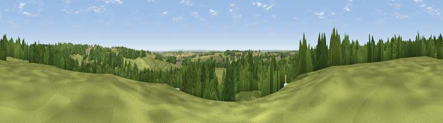

Viewpoint near Mercaston
#23936 in England · top 29% of its area beats it · near MercastonThe view, rendered

A 360° render of this exact spot computed from the terrain model, tree cover and land cover — summer colours, afternoon light, calibrated against photographs of famous viewpoints. Real trees, hedges and buildings will differ in detail.
The panorama
Grey silhouette: terrain skyline in each direction (720 bearings, Earth curvature and refraction included). Dashed green: skyline with trees (+15 m) and buildings (+8 m) as obstacles. Blue strip: how far the ground is visible on each bearing.
Where the view opens
Wedge length = distance to the farthest visible ground on that bearing (vegetation-aware). Rings at 10, 25 and 50 km.
What fills the view
44% grassland · 43% woodland · 11% cropland · 2% built-up ·
Angular shares of the visible panorama (visual magnitude), not map area. Landscape diversity 0.47 (0–1 Shannon).
Key numbers
More beautiful places nearby
The staircase of upgrades: each row has a higher view potential than everything closer. Driving times are estimates from straight-line distance, calibrated against real road routing — check an actual route before setting out.
| Place | Direction | Drive | Score |
|---|---|---|---|
| Viewpoint near Turnditch | NE · 2 km | ~5 min | 57.2 |
| Viewpoint near Windley | E · 3 km | ~8 min | 58.6 |
| Viewpoint near Kniveton | NW · 6 km | ~13 min | 60.5 |
| Viewpoint near Kniveton | NW · 7 km | ~15 min | 65.2 |
| Viewpoint near Hazelwood | ENE · 7 km | ~15 min | 66.3 |
| Alport Height | NNE · 8 km | ~16 min | 73.9 |
| Tissington Hill | NW · 14 km | ~26 min | 75.5 |
| Viewpoint near Stanton under Bardon | SSE · 37 km | ~55 min | 76.0 |
52.99605, -1.60551 · source: screening · position refined by local search. Computed location — check access rights before visiting.